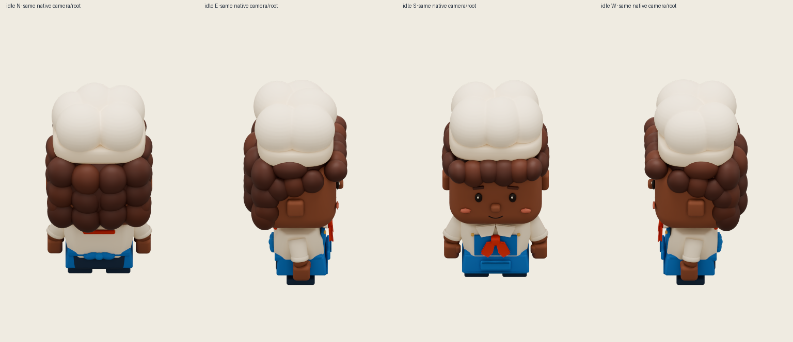
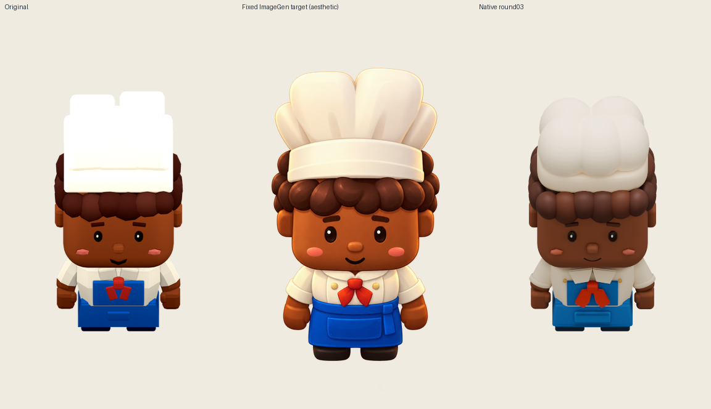

Lena · round03 · native12fps All16 clips use12 native frames at12fps. Idle/work/hold loop. Load stops at its original last frame. Full frames remain registered192×320; no fitting or pixel repaint.
Play all from start Pause all idle-N ·12fps ·loop idle-E ·12fps ·loop idle-S ·12fps ·loop idle-W ·12fps ·loop work-N ·12fps ·loop work-E ·12fps ·loop work-S ·12fps ·loop work-W ·12fps ·loop hold-N ·12fps ·loop hold-E ·12fps ·loop hold-S ·12fps ·loop hold-W ·12fps ·loop load-N ·12fps ·ends held load-E ·12fps ·ends held load-S ·12fps ·ends held load-W ·12fps ·ends held
Source-consistent serving belt context · original128px pitch Native load action is unchanged. Source also finishes with the dish held; the game then transfers dish ownership. Source and candidate contexts are shown together. No separate authoritative beltLoad transform exists.
source load N source load E source load S source load W candidate load N candidate load E candidate load S candidate load W
Four native facings 
Fixed reference comparison 
Light/gray/dark evidence light enlarged edges · light states/facings gray enlarged edges · gray states/facings dark enlarged edges · dark states/facings Every frame on each background idle-N-light · idle-N-gray · idle-N-dark · idle-E-light · idle-E-gray · idle-E-dark · idle-S-light · idle-S-gray · idle-S-dark · idle-W-light · idle-W-gray · idle-W-dark · work-N-light · work-N-gray · work-N-dark · work-E-light · work-E-gray · work-E-dark · work-S-light · work-S-gray · work-S-dark · work-W-light · work-W-gray · work-W-dark · hold-N-light · hold-N-gray · hold-N-dark · hold-E-light · hold-E-gray · hold-E-dark · hold-S-light · hold-S-gray · hold-S-dark · hold-W-light · hold-W-gray · hold-W-dark · load-N-light · load-N-gray · load-N-dark · load-E-light · load-E-gray · load-E-dark · load-S-light · load-S-gray · load-S-dark · load-W-light · load-W-gray · load-W-dark ·